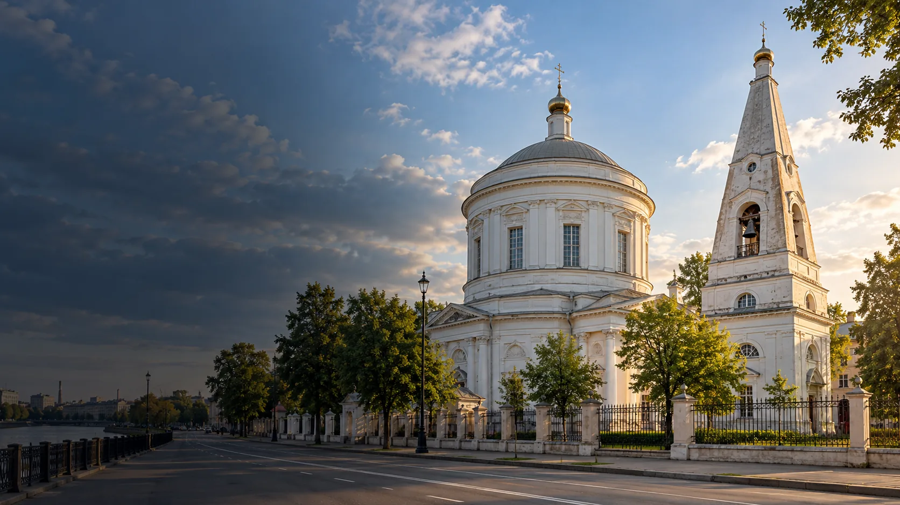

Подростково-молодёжный клуб
АртНевский
ул. Русановская, д. 13, корп. 2
Смотреть клуб
Молодёжные площадки района
Клубы ПМЦ «Невский» от Невской заставы до Рыбацкого. Найди занятия рядом с домом.
Смотреть площадкиСведения сверены по открытым источникам. Набор, расписание и условия уточняй у организатора.
Каталог района
Ищи по названию, адресу или направлению.
Показано 34 площадки
ул. Русановская, д. 13, корп. 2
Смотреть клубул. Кржижановского, д. 5
Смотреть клубул. Дыбенко, д. 25, корп. 1
Смотреть клубОктябрьская наб., д. 84, корп. 5
Смотреть клубТоварищеский пр., д. 20/27
Смотреть клуббульвар Красных Зорь, д. 5
Смотреть клубул. Народная, д. 28
Смотреть клубул. Крыленко, д. 21
Смотреть клубул. Коллонтай, д. 21, корп. 1
Смотреть клубпр. Большевиков, д. 57, корп. 2
Смотреть клубул. Прибрежная, д. 16
Смотреть клубул. Бабушкина, д. 42, корп. 4А
Смотреть площадкуул. Бабушкина, д. 42, корп. 1
Смотреть клубул. Новосёлов, д. 53, корп. 2
Смотреть клубул. Антонова-Овсеенко, д. 11, корп. 1
Смотреть клубул. Коллонтай, д. 32, корп. 3
Смотреть клубул. Ольминского, д. 26
Смотреть клубДальневосточный пр., д. 4
Смотреть клубул. Седова, д. 98А
Смотреть клубул. Дыбенко, д. 13, корп. 1
Смотреть клубул. Караваевская, д. 31
Смотреть клубул. Коллонтай, д. 41
Смотреть клубул. Кибальчича, д. 8, корп. 2
Смотреть клуб3-й Рабфаковский пер., д. 4
Смотреть клубДальневосточный пр., д. 8, корп. 1
Смотреть клубул. Крупской, д. 31
Смотреть клубпр. Большевиков, д. 6, корп. 2
Смотреть клубпр. Обуховской Обороны, д. 95, корп. 1
Смотреть клубул. Бабушкина, д. 117, корп. 2
Смотреть клубпр. Солидарности, д. 11, корп. 1
Смотреть клубул. Полярников, д. 19
Смотреть клубпр. Обуховской Обороны, д. 243
Смотреть клубул. Еремеева, д. 1
Смотреть клубОктябрьская наб., д. 86, корп. 2, стр. 1
Смотреть площадкуПодходящих площадок не найдено. Попробуй другой запрос.
Связаться с учреждением
Контакты учреждения
ул. Бабушкина, д. 42, корп. 1
Перед посещением
Спроси, для кого открыта группа.
Проверь дни, время и наличие мест.
Узнай, как присоединиться.
Состав, адреса и бесплатные направления взяты из городского документа ПМЦ «Невский», загруженного 01.06.2026. Контакт учреждения дополнительно сверен с его сайтом. Телефоны отдельных клубов взяты из документа; перед визитом проверь их актуальность.